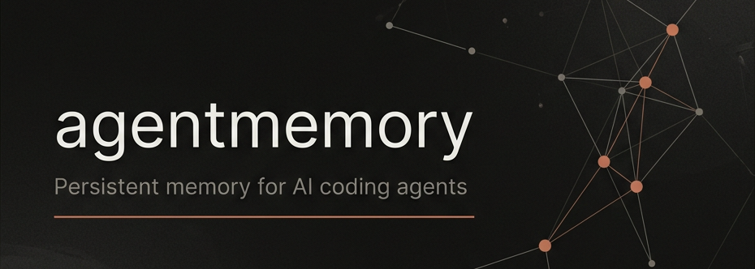

agentmemory
从事件证据到可检索记忆：agentmemory 的检索与记忆形成机制
问题不是上下文短，而是经验不可积累
把更多历史塞进 prompt 不能解决长期记忆的三个核心约束：不可积累、不可检索、不可追踪。
不可积累
一次会话里的尝试、错误、决策和文件变更，默认不会沉淀为下一次可复用的知识。
不可检索
旧上下文散落在聊天、终端输出、commit 和文件里；agent 只能重新grep，不能按证据找回。
不可追踪
没有 observation id、session id 和来源路径，就无法定位证据，也无法知道长期结论来自哪段历史。
五种操作，对应不同产物边界
capture、compress、retrieve、summarize、consolidate 不是操作同一种“记忆”，而是记忆周期里的不同转换。
| 操作 | 输入 | 产物 / 边界 |
|---|---|---|
| Capture | raw event | RawObservation：带来源的事件证据 |
| Compress | 单条 observation | CompressedObservation：可检索单元 |
| Retrieve | query | top-k evidence：按问题找回证据 |
| Summarize | 一个 session | SessionSummary：会话摘要 |
| Consolidate | 多个 sessions / observations | Memory：带来源的长期结论 |
关键区分
内容对象、检索索引和派生 store 要分开看
同一个底层 state 里有不同逻辑角色：可返回内容、检索信号、交接摘要和关系索引。
contentrank + expandderived store核心区分
BM25 = keyword ranking over title / narrative / facts / concepts / files.
记录边界：先问它未来能否作为证据
长期记忆不是全量日志。适合保留的信息应能被检索、能回到来源，并且会改变未来行为。
适合进入 observation
不适合直接变长期事实
事件证据 → 检索单元
压缩的目标不是写摘要文章，而是把一条事件转成稳定、可排序、可引用的 observation。
RawObservation event
hookType事件入口：prompt、tool、failure、compact、session。toolInput文件路径、命令、查询条件等可抽取线索。toolOutput结果、错误、截图或命令输出的原始证据。raw处理后的原始 payload，用于回放和追溯。sessionId来源边界；后续检索、总结、核对都依赖它。CompressedObservation index unit
type/title给检索和展示稳定的类别与标题。narrative短叙述，连接输入、输出和任务语境。concepts可选主题标签，用于后续概念聚合。files文件级证据，用于代码库相关召回。importance决定保留、总结和长期整理时的优先级。confidence区分启发式压缩、LLM 压缩和人工确认记忆。id/source来源由 id、sessionId、timestamp、agentId 和后续 sourceObservationIds 串起来。Capture 的目标：把事件流变成可召回证据
研究问题不是入口有多少，而是每次事件能否稳定地产生 observation、索引信号和来源边界。
RawObservationDedupMapbuildSyntheticCompressionstore observationsearch index证据单元的作用
retrieval benchmark 不会命中一整段无结构日志，它命中的是带 id、session 和文本信号的 evidence unit。
Capture 因此不是记录越多越好，而是让每个有价值事件都能成为后续 recall、verify 和 consolidation 的输入。
启发式压缩：只抽确定字段，不做语义归纳
buildSyntheticCompression 把 raw tool event 变成最小可用的检索单元；更强语义归纳是 LLM 增强路径。
PostToolUseinferTypetitlenarrative ≤ 400concepts=[]输出示例 CompressedObservation
typefile_changetitleEdited src/hooks/stop.tsfiles["src/hooks/stop.ts"]narrative工具输入和结果形成短证据文本。importance5：中性优先级。confidence0.3：低置信启发式来源。一个 observation，三种检索入口
BM25、vector、graph 不是工程冗余，而是分别覆盖 lexical、semantic 和 relational evidence。
精确词与代码符号
文件路径、函数名、错误码、命令参数、测试名这类字符串证据最适合 lexical matching。
语义相似
当 query 和 observation 不共享关键词时，embedding 帮助召回 paraphrase、意图相近的证据。
实体与关系
session、文件、概念和相邻证据形成扩展入口，用于跨步骤或跨会话问题。
检索信号的研究含义
同一条 observation 同时暴露 lexical、semantic 和 relational views，实验才能比较哪类问题依赖哪类证据。没有向量时仍可用 keyword evidence；向量只是提高语义覆盖。
四步把候选变成 top-k evidence
BM25、vector、graph 先各自产生候选，再用 RRF_K=60 的 rank fusion 得到可注入的证据列表。
01 recall
召回候选
BM25 和 vector 各自返回候选 observation；graph 提供关系候选。
02 expand
实体扩展
从 query 和高分语义候选抽实体，补入相邻文件、session、概念证据。
03 fuse
rank fusion
RRF_K=60 表示高排名证据加分更明显，低排名证据仍有小贡献。
04 diversify
session 多样性
合并后限制单个 session 占比，避免 top-k 被同一段历史淹没。
为什么不用单一路径
coding-agent 历史里同一个问题可能表现为文件名、错误输出、自然语言意图或跨会话模式。hybrid retrieval 让这些证据流都能投票，最后返回可排序的 observation evidence。
先返回 compact top-k，再按需展开 observation
检索系统先回答“哪些证据可能相关”，上下文注入再决定“哪些证据需要全文”。
1. Compact candidates
top-k 先只返回 obsId、sessionId、title、type、score、timestamp。
这一步便于 agent 或人快速判断候选是否值得展开。
2. Selective expansion
只有被选中的 obsId 才展开为完整 observation、narrative 和来源信息。
展开从“候选列表”切换到“可引用证据”。
3. Budgeted context
token budget 约束最终注入的证据数量和格式，避免把整段历史搬回 prompt。
这让 recall evaluation 和实际上下文使用保持同一证据粒度。
R@k 衡量相关历史能否进入 top-k
现有数字证明的是“能否找回证据”，不是“agent 一定做对任务”。
| 评测 | 结果 | 含义 |
|---|---|---|
| LongMemEval-S | R@5 95.2% R@10 98.6%, MRR 88.2% | 500 questions，约 48 sessions/question；retrieval-only。 |
| coding-agent-life-v1 | R@5 1.000 15 / 15 top-5 hit | 小型 coding-agent 工作流语料，验证 temporal / multi-session recall。 |
| Token savings | 92% | 与加载全部历史相比，top-k recall 只返回检索到的证据。 |
边界说明
summary：session 结束后的交接摘要
它写入 KV.summaries，用于 handoff、context 和后续整理；不会直接进入 recall index 或 knowledge graph。
sessionIdCHUNK_SIZE_DEFAULTCHUNK_CONCURRENCY_DEFAULTSessionSummaryKV.summaries它不会直接构建什么
summary 本身不会写入 BM25 / vector index，所以 memory_recall 的命中对象仍主要是 observation 和 explicit memory。
summary 也不会直接更新 knowledge graph；graph 需要单独的 graph extraction，把 observations 送进图抽取流程。
consolidate：从多条 evidence 形成长期 Memory
它不是再写一个 session 摘要，而是把跨 session 的重复证据归纳为有来源、可演化的长期结论。
observationsgroupstop evidencesynthesizeMemory和 summarize 的区别
summarize 压缩一个 session，产物帮助理解那段历史；consolidate 跨多段历史找重复模式，产物会影响未来行为。
长期 Memory 的可信度来自证据集合，而不是一次生成文本本身。
多次 retry / auth / file-change 观察如何形成一条 memory
consolidation 的价值在于把分散事件转成未来可执行的经验，而不是保留每次失败的长日志。
候选 evidence
auth-retryobs_101, obs_229, obs_301workflow / bugv1top-k evidence治理闭环：结论必须能回到证据，也必须能撤销
长期记忆的可靠性来自三件事：保存来源、按来源核对、在证据过期或错误时删除。
sourceObservationIds
保留来源
Memory 保存支持它的 observation ids；长期结论不脱离证据集合。
verify
回查证据
需要核对时，按来源 id 找回原 observation、session 和时间。
forget / delete
撤销结论
当证据不应继续影响未来行为时，删除对应 memory 或 observation。
研究含义
可追溯来源让 consolidation 的输出可以被人工或 evaluator 复核；可撤销能力让长期记忆不会因为一次错误归纳而永久污染后续行为。
边界：retrieval recall ≠ reader correctness ≠ task success
科研分享里需要把可测能力、生成质量和模型成本分开声明。
R@k 只衡量证据是否回来
LongMemEval-S 的 R@5 是 gold session 是否进入 top-k，不是最终回答正确率。
reader 仍可能误读证据
证据进上下文后，agent 是否正确引用、推理和执行，是另一层评测。
长期记忆仍需复核
consolidation 能归纳模式，但生成式结论仍要依赖来源核对和撤销机制。
默认 capture 不调用 LLM
模型成本主要来自 auto-compress、summarize、consolidate 和可选 rerank。
何时该记，何时该搜，何时该形成长期记忆
agentmemory 的科研主线：把历史切成证据，用检索找回证据，再从重复证据中形成 memory。
该记
当事件未来会改变 agent 行为，并且能绑定到 session 与来源时，记录成 observation。
该搜
当问题依赖历史决策、文件变更、错误处理或跨 session 事实时，先 retrieve top-k evidence。
该形成记忆
当多次 evidence 指向同一模式时，再 consolidate 成带来源、可演化的长期 Memory。